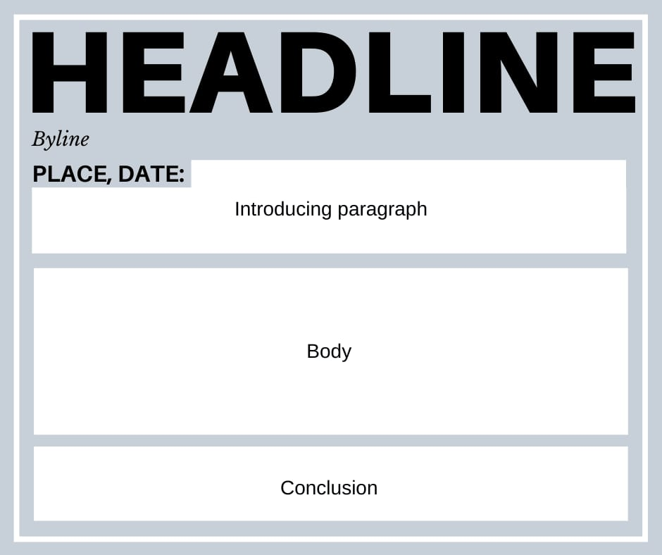

News Writing
Introduction:
News writing is a skill that’s used worldwide, but this writing format—with its unique rules and structure—differs from other forms of writing. Understanding how to write a news story correctly can ensure you’re performing your journalistic duty to your audience.
What is a news writing?
A news writing is a writing format that provides concise and factual information to a reader. News stories typically report on current affairs that are noteworthy—including legislation, announcements, education, discoveries or research, election results, public health, sports, and the arts.
Unlike blog and opinion posts, a strong news writing doesn’t include personal opinion, speculation, or bias. Additionally, the diction and syntax should be accessible to any reader, even if they’re not deeply familiar with the topic. News stories, therefore, don’t contain jargon that you might find in a research paper or essay
Types of News Reports
- Local News
- National News
- International News
- Entertainment News
- Business News
- Sports News
Structure of a News Report
How to Write a News Report?
- Gathering Information:
- Visiting the Site:
- Interviews:
- Transcribing the Interviews:
- Start Writing the Report:
- Catchy Headline:
- Writing the Lead:
- The Body:
- Include the 5Ws and 1H:
- What was the incident?
- When was the incident?
- Where was the incident?
- Why did it happen?
- Who was involved?
- How did it happen?
- Writing the Conclusion:
- Editing and Fact-checking:
Collect important and accurate information about the incident. Collect reliable evidence to support your story.
Visit the place where the event took place. You might come across interesting facts about the news from the site.
Conduct interviews with the eyewitnesses of the incident. Record all the interviews.
Transcribe the recorded interviews so the reader can understand them easily.
After collecting all the data, you can start writing the report.
Your headline should be interesting and capture the readers’ interest. A proper headline can be decided after the report writing is completed.
The introductory paragraph of the news should mention all the important information. It should have the names of the people involved, the date, place, and time of what happened.
The body should have the detailing of the things that were mentioned in the lead. It should be written in a third-person neutral point of view.
Include the family details and current condition of the people involved. It will have suggestions for a solution.
Edit the report before you publish it to the audience. Check that all the information provided is accurate and not fabricated.

Examples of News Report
Example 1: Local School Event
Headline: "Local School Wins National Science Fair"
Byline: By Jane Doe, Local Reporter
Lead: The Greenfield High School science team secured first place at the National Science Fair held in Washington, D.C. on June 5th.
Body: The team’s project, focusing on renewable energy solutions, impressed judges with its innovative approach. Principal John Smith praised the students for their dedication and hard work. The victory brings a proud moment for the community, which has been supportive of the school's science programme.
Ending: The school plans to celebrate the win with a special assembly next week, where students will share their projects and experiences with the community.
Example 2: City Traffic Incident
Headline: "Major Traffic Accident Causes Downtown Gridlock"
Byline: By Mark Lee, City Reporter
Lead: A multi-vehicle collision on Main Street led to significant traffic delays in downtown Cityville during the morning rush hour on August 12th.
Body: The accident involved three cars and resulted in minor injuries to two drivers. Emergency services quickly responded, and traffic was rerouted through side streets. Police are investigating the cause of the crash, but initial reports suggest that speeding may have been a factor. Drivers are advised to avoid the area until the scene is cleared.
Ending: Authorities are working to clear the wreckage and restore normal traffic flow. An update will be provided as soon as more information is available.
Example 3: New Park Opening
Headline: "New Community Park Opens to Enthusiastic Crowd"
Byline: By Emily Clark, Community Reporter
Lead: The new Riverside Community Park was officially opened to the public on Saturday, August 15th, with a ribbon-cutting ceremony attended by local officials and residents.
Body: The park features walking trails, playgrounds, and picnic areas, providing a new recreational space for families. Mayor Susan Adams highlighted the park's role in enhancing community well-being and promoting outdoor activities. The opening event included performances by local bands and activities for children.
Ending: The park is open daily from sunrise to sunset. Residents are encouraged to visit and enjoy the new facilities while adhering to park rules and regulations.